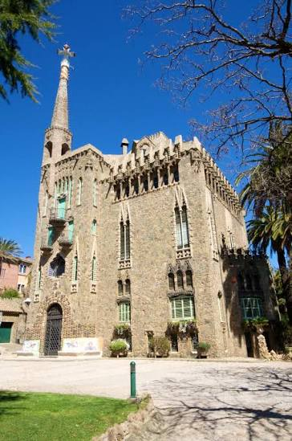

Torre Bellesguard
Bellesguard ist das Gaudí-Werk, das kaum jemand kennt – und genau deshalb eines der besonderen. Kein Reisebus hält hier, keine Warteschlange. Nur ein dunkles, fast düsteres "Schloss" hoch über der Stadt, mit einem Turm, der aussieht, als könnte jeden Moment ein Drache daraus hervorkriechen.

Geschichte
Gaudí baute Bellesguard zwischen 1900 und 1909 auf den Fundamenten der mittelalterlichen Sommerresidenz von König Martí I. ("der Menschliche"), dem letzten König der Krone Aragón. Der Name bedeutet katalanisch "schöne Aussicht" – zurecht, denn von hier oben sieht man ganz Barcelona bis zum Meer. Anders als bei seinen späteren, immer freieren Werken hielt sich Gaudí hier noch stärker an gotische Formen, kombiniert mit seinen typischen parabolischen Bögen.
Warum besonders
Bellesguard zeigt einen Gaudí im Übergang: schon voller eigener Handschrift (das Drachenrücken-Dach als Sant-Jordi-Motiv, das sich später bei Casa Batlló wiederholt), aber noch nicht so ausufernd wie seine bekannteren Bauten. Dazu die fast vollständige Abwesenheit anderer Touristen – ein seltenes, ruhiges Gaudí-Erlebnis.
Praktische Hinweise
Euer Termin: Sonntag, 30.08.2026, 14:00 Uhr (letzter Einlass, Schließung 15:00). Adresse: Carrer de Bellesguard 20, 08022 Barcelona. Audioguide über eigenes Handy, ca. 1 Std. für außen und innen, 6 Sprachen. Anreise am besten per Uber/Taxi von der Sagrada Família (20–25 Min., ca. 12–18 €) – Öffis brauchen deutlich länger.